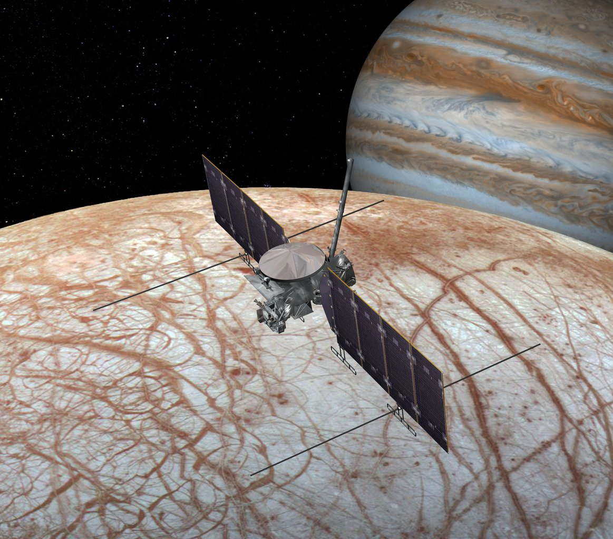

Providing new constraints on Europa's surface composition
Reflectance spectroscopy has been the bread-and-butter for our understanding of the surface composition of most solar system objects, including the astrobiologically interesting moon of Jupiter, Europa. In Europa's case, our interest in its surface composition is special, as it can allow us to place constraints on the habitability of its subsurface ocean, as we have evidence that there is an active exchange of material between Europa's surface and the ocean beneath it. However, to rigorously evaluate evidence of a given chemical species on Europa's surface and calculate its abundance, new methods like Bayesian inference need to be adopted that can efficiently explore complex parameter spaces of models we use to fit these spectra.
As part of my NASA FINESST (Future Investigators in NASA Earth and Space Science and Technology) award, I am developing an open source Python software that will allow us to perform such an analysis to old and new Europan data, along with helping us asses the capability of future missions like Europa Clipper to pick out signatures of trace species of interest, like organics.
My past and current projects on this subject are listed below:
Bayesian analysis of Juno/JIRAM's NIR observations of Europa
NASA's Juno mission observed Europa using its JIRAM spectrometer and yielded several high-quality observations of the moon, which were published in 2019. I led the analysis of a small set of spectra from the Juno JM0081 observation set, using a Bayesian inference framework with the goal of constraining the abundance of amorphous and crystalline water ice, the two dominant water ice forms on solar system surfaces. We were also trying to understand the nature of the regolith - whether the constituents are intimately mixed together or whether they exist as distinct patches. The paper describing this work was published in Icarus and is also available on arXiv.

A comprehensive revisit of select Galileo/NIMS observations of Europa
Using my Bayesian inference framework, I analyzed select Galileo/NIMS observations of Europa in the NIR (2-5 microns). My framework makes several quantitative improvements relative to prior analyses: 1) simultaneous inclusion of key Europan species - amorphous and crystalline water ice,
sulfuric acid octahydrate, CO2, and SO2, 2) physical parameters like regolith
porosity and radiation-induced band-center shift, and 3) tools to quantify confidence
in the presence of each species included in the model, and to constrain their parameters and explore degeneracies of solution. Early results from this project were presented at the American Astronomical Society's Division of Planetary Science meeting in 2020, whose recording can be found here. A paper related to this work is has been published in the Planetary Science Journal and is also available on arXiv.

Assessing the capability of Europa Clipper's Mapping and Imaging Spectrometer (MISE) to probe Europa's surface composition
I am applying my Bayesian framework to thoroughly assess how Europa Clipper’s MISE instrument will improve our understanding of Europa’s surface composition. Using existing optical constants, I want to investigate its ability to detect and constrain properties of trace species like oxides and organics. I also want to investigate the dependence of its performance of the signal-to-noise ratio of the data and the observation geometry parameters. This idea is inspired from previous works in exoplanet science that assess the ability of future missions like JWST and the Nancy Grace Roman Space Telescope (previously WFIRST) to characterize exoplanet atmospheres.